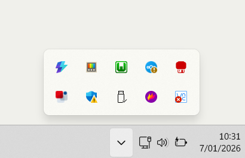

WAMP
Installatie
- Surf naar https://github.com/abbodi1406/vcredist/releases
- Download & installeer VisualCppRedist_AIO_x86_x64.exe
- Surf naar https://sourceforge.net/projects/wampserver/files/
- Klik op Download Latest Version
- Installeer het gedownloade bestand (wampserver.exe)
Gebruik
- Start Wampserver
- Klik op het Wamp icoontje rechts onderaan in de system tray

- Klik op PhpMyAdmin > PhpMyAdmin
- Log in met
- Gebruikernaam: root
- Geen wachtwoord
XAMPP
Installatie
- Surf naar https://www.apachefriends.org/download.html
- Download & installeer XAMPP
Gebruik
- Apache > Start
- MySQL > Start > Admin
Bij error: MySQL shutdown unexcpectedly, …
MySQL stopt meteen nadat je op de start knop gedrukt hebt
- Open Task Manager (ctrl-shift-esc).
- Alles met SQL sluiten.
Als al de rest niet werkt
- Uninstall XAMPP
- Reinstall XAMPP
Last edited: 14/01/2026
Created: 06/01/2026
Created: 06/01/2026